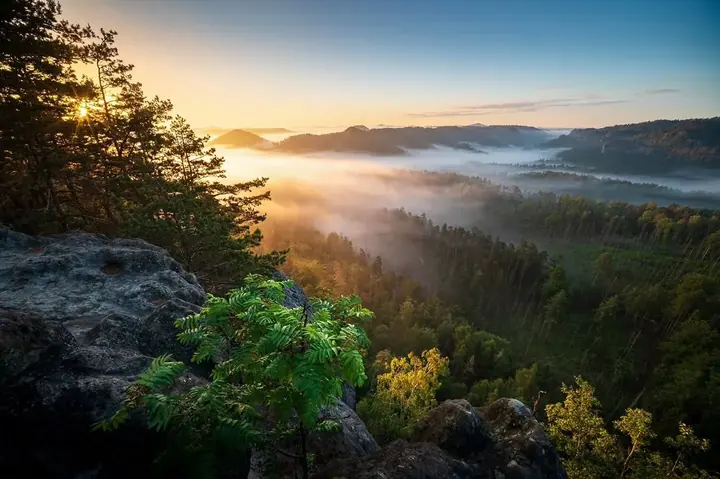
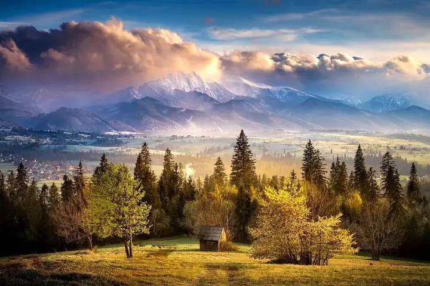
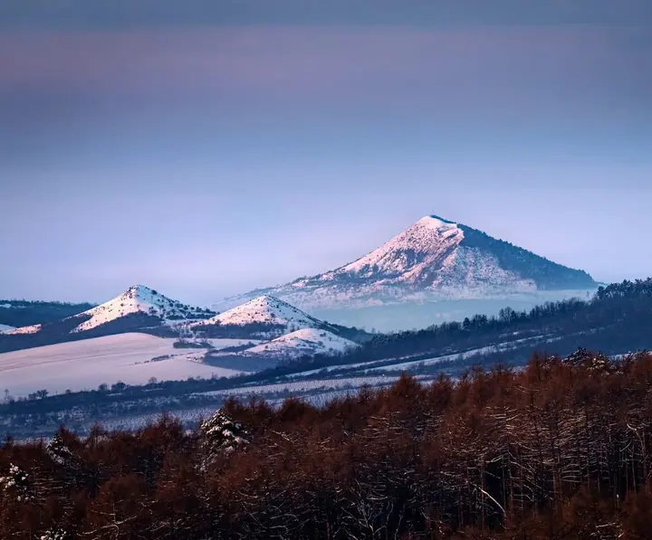
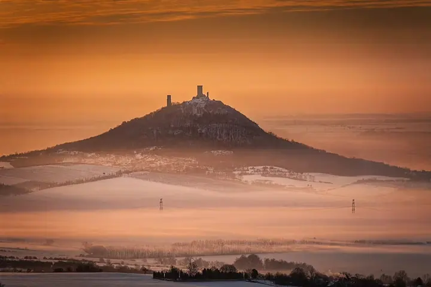
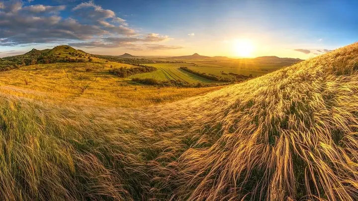
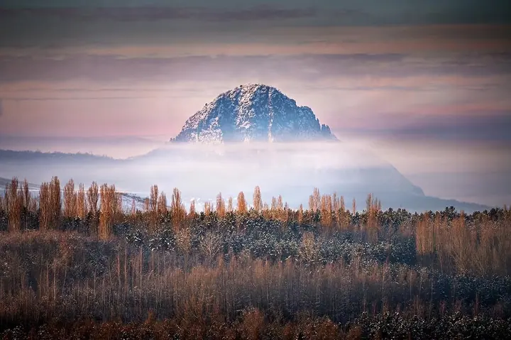
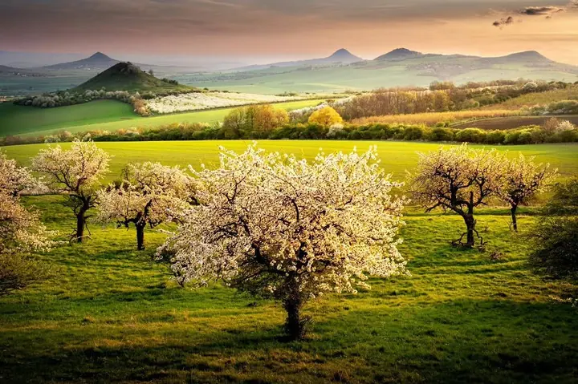
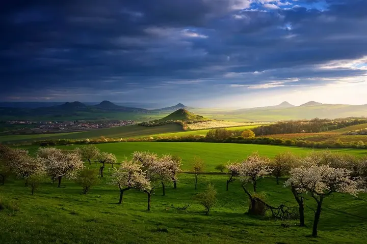
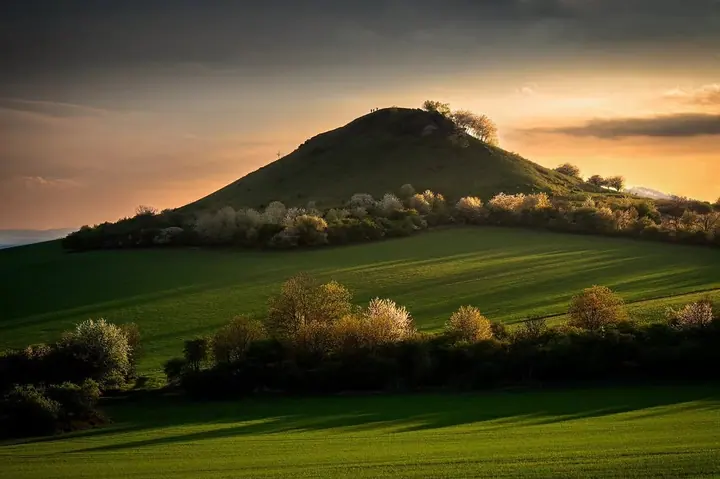

01 / 03
Krajina
Krajinu fotím nejčastěji. Kopce nad mlhou, rozkvetlé sady a skalní vyhlídky za svítání.
Zeptat se na termín→








Krajina, když se zvedá mlha
Zeptat se na termín →(01) Ahoj
Jmenuji se Petr Kovář a fotím jako amatér, hlavně krajinu , ale taky města, ptáky a zvířata. Nejradši vyrážím brzy ráno, kdy údolí ještě leží v mlze a první světlo dopadá na kopce . Na cestách jsem fotil třeba ve Slovinsku a v Norsku.
1 379lidí sleduje mou práci na Instagramu
441příspěvků s fotkami a příběhy
(02) Co fotím
01 / 03
Krajinu fotím nejčastěji. Kopce nad mlhou, rozkvetlé sady a skalní vyhlídky za svítání.
Zeptat se na termín→02 / 03
Kromě přírody mě baví i města, jejich ulice, světla a architektura.
Zeptat se na termín→03 / 03
Rád fotím ptáky a zvířata. Chce to hodně trpělivosti a kus štěstí.
Zeptat se na termín→(04) Postup
Od první zprávy po hotovou galerii.
Krok 1 z 4
Ozvěte se přes formulář, kterou fotku nebo téma máte na mysli.
Krok 2 z 4
Domluvíme se, k čemu fotku potřebujete a v jakém formátu.
Krok 3 z 4
Vybraný snímek připravím v odpovídající velikosti a kvalitě.
Krok 4 z 4
Fotku vám pošlu podle domluvy.
Nejlepší světlo přichází, než se svět probudí
(05) Za objektivem
Fotím jako amatér, ze zájmu a pro radost. Nejvíc mě táhne krajina. Kopce, které vystupují z mlhy, rozkvetlé sady na jaře, skalní vyhlídky nad lesy. Na takové světlo se často čeká, ale stojí to za to.
Kromě krajiny fotím i města, ptáky a zvířata. Každé z toho chce něco jiného: u krajiny trpělivost a správnou hodinu, u zvířat a ptáků ještě víc trpělivosti a trochu štěstí.
Rád cestuji. V roce 2024 jsem fotil ve Slovinsku a v Norsku a fotky z těchto cest najdete i na mém Instagramu. Další snímky postupně přidávám na svůj web.
Petr
Petr Kovář · Fotograf krajiny a přírody
Hlavně krajinu. Kromě toho fotím i města, ptáky a zvířata.
Převážně v Česku, z cest mám fotky třeba ze Slovinska a Norska.
Na mém webu petrkovar.eu, kam přidávám nové snímky, a na Instagramu @kovar.petr.
Určitě. Napište mi, o který snímek jde a k čemu by měl sloužit, a domluvíme se.
(07) Kontakt
Napište pár vět o tom, co si představujete, a termín, který se vám hodí.
help@smugmug.com